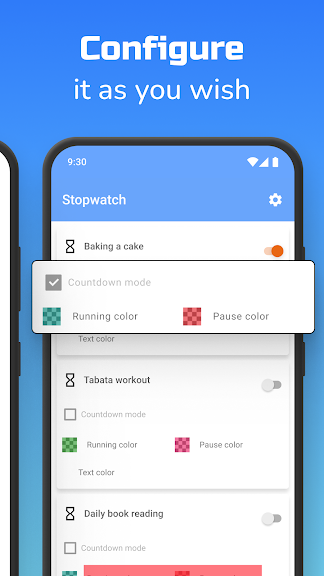
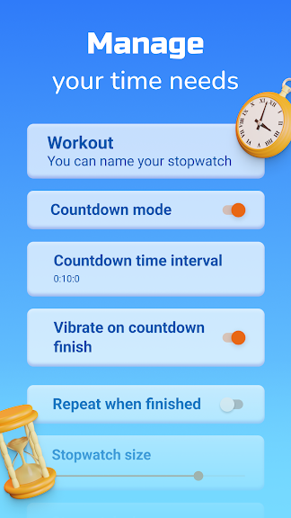

一款真能同时挂五个计时器的 Android 悬浮秒表
用过七八款计时工具后，我留下来的反而是这款名字朴素的 Stopwatch——不是功能堆砌，是把"多表同屏"这一件事做透了。
Android 生态里计时工具的竞争格局挺有意思的：系统自带的计时器够用但只能同时跑一个，大厂日历 App 内置的计时功能跟日程深度绑定但浮窗体验粗糙，第三方计时工具要么往专注番茄方向发展、要么往运动计时方向深挖。Stopwatch 的官网站在一个没人认真做过的位置上——它不搞番茄钟、不做训练计划，就是老老实实让你在屏幕上同时挂最多五个秒表，各自独立运行、各自配色、各自控。
五个槽位同屏，不是噱头
市面上绝大多数计时工具都只支持"一次一个"。你要炖汤还要同时煮茶叶蛋？要么两个 App 来回切，要么一个计时完了手动开另一个。Stopwatch 的五个槽位解决的就是这种场景。

槽位不是那种"假多选"——每个槽位有独立的命名、独立的运行/暂停/清零状态、独立的倒计时模式开关。我给每个槽位起了名字："炖汤""茶叶蛋""洗衣机""冥想""番茄"，屏幕上同时飘着五个小窗口，哪个在跑看底色就知道，哪个要停直接点对应的那个。不用进应用、不用切后台，盯着屏幕一角就能把四五个并行任务的时间管起来。
手势操作是真的省时间
Stopwatch 另一个做得比同类好的地方是手势设计。大多数悬浮计时工具的交互都要回到应用内部才能操作，或者浮窗上堆一排按钮显得很笨重。Stopwatch 把三个核心操作简化成三种手势：单击开始/暂停、双击清零、长按退出。没别的了。
用了一周你会发现这三个手势的排列组合刚好覆盖所有高频场景。计时到点了要停——单击；这一轮结束要开下一轮——双击清零；今天不用了——长按让浮窗消失。不占屏幕空间、不需要视线聚焦就能操作。我在做饭的时候右手拿锅铲，左手拇指在屏幕边缘点一下就能暂停，不用凑过去看按钮在哪。
外观定制不是装饰，是功能
Stopwatch 让我觉得它"把事做透"的第三点，是配色系统。每个槽位可以独立设置三种颜色：运行色、暂停色、文本色。这不是开发者随手加的"主题皮肤"——它直接服务于"多表同屏"这个核心场景。
运行色决定计时正在进行时的底色，默认是绿色。但当你五个表同时挂着的时候，把炖汤设成红、茶叶蛋设成蓝、洗衣机设成黄，扫一眼屏幕就知道哪个表在跑、哪个已经暂停了。配合文本色的深底配浅字、浅底配深字原则，远距离也能读清数字。毫秒显示也可以单独开关——速通或短时冲刺计时的时候开着看精度，几小时的长计时关掉更清爽。更多配色思路和显示参数的组合可以去翻Stopwatch文档，作者把各种排列组合的效果都写清楚了。

它的取舍
Stopwatch 不是没有代价。最明显的一点是它把所有功能都押在了"悬浮窗"这一件事上——而 Android 的悬浮窗权限历来是个麻烦事，厂商 ROM 管控松紧不一，从官方下载拿到安装包后，首次安装要手动放行权限、允许后台弹出，某些机型还要锁进程防杀。上手门槛比系统自带计时器高，第一次打开的时候悬浮窗没出来十有八九是权限没给全，得跟着排查步骤一项项过。
第二点是它放弃了专注类、运动类的附加功能。番茄钟统计、训练组数记录、每日使用图表——这些在同类 App 里常见的东西 Stopwatch 一概没有。它就是个纯计时工具，计时精度够高、操作够快、浮窗够灵活，但别指望它帮你分析时间花在哪了。
第三点是数据不云端。卸载重装所有槽位配置清零，没有账号、没有同步、没有备份。开发者的态度很明确：这是个轻量工具，不值得为此建服务。好处是隐私无忧、体积小巧；坏处是换机或重装系统的时候得重新配一遍。
选购结论
如果你的计时需求是"一次一个、顺手用一下"，系统自带计时器就够了，Stopwatch 的权限折腾完全没必要。如果你需要番茄钟、训练记录或时间分析，去专注类或运动类赛道找，Stopwatch 不在那个竞争体系里。
但如果你真的有"同时管多个并行计时任务"的场景——做饭时同时盯着三四件事、工作里等多个异步任务完成、游戏里速通要掐多个节点——Stopwatch 是目前我用过把这件事做得最顺手的。五个独立槽位、无按钮手势、状态配色三件事加在一起，让多表同屏不再是摆设功能而是真能省时间的生产力。
我现在基本离不开它了。屏幕上常飘着两三个浮窗，炖汤的、洗衣机的、番茄工作的，点一下操作、扫一眼看状态，整个做饭或工作过程不用掏出手机专门管时间。这种"做一件事、把一件事做透"的工具，在今天功能堆砌成风的 Android 生态里反而少见。整理 Stopwatch 相关文档资料的时候我同步了一份到 GitHub、Gitee 和 GitCode，国内用户访问 Gitee 和 GitCode 会更顺畅一些。